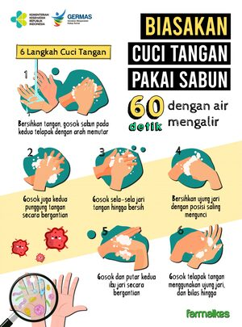

Cuci Tangan Dengan Sabun
Sebagai orang yang bergerak aktif, kita seringkali bersentuhan dengan benda benda yang terkontaminasi dengan bakteri maupun penyakit. Hendaknya kita sering untuk mencuci tangan dengan sabun sebagai antiseptik guna menjaga tubuh dari bakteri yang ada. Apabila tubuh terjaga dari bakteri dan penyakit maka tubuh akan lebih sehat dan tidak mudah terserang penyakit, karena 45% penyakit diarebisa dicegah dengan mencuci tangan. Kebersihan tangan merupakan hal yang terpenting dari kewaspadaan tiap orang dan merupakan metode yang paling awal dan efektif dalam mencegah penularan mikroba patogen yang berhubungan dengan kesehatan. Usaha untuk menjaga tangan agar selalu bersih adalah salah satu langkah penting untuk mencegah penyakit dan mencegah penularan penyakit ke orang lain. Cara mudah untuk selalu cuci tangan adalah dengan menyediakan sarana cuci tangan dan sabun diberbagai tempat strategis diluar rumah maupun tempat makan.
